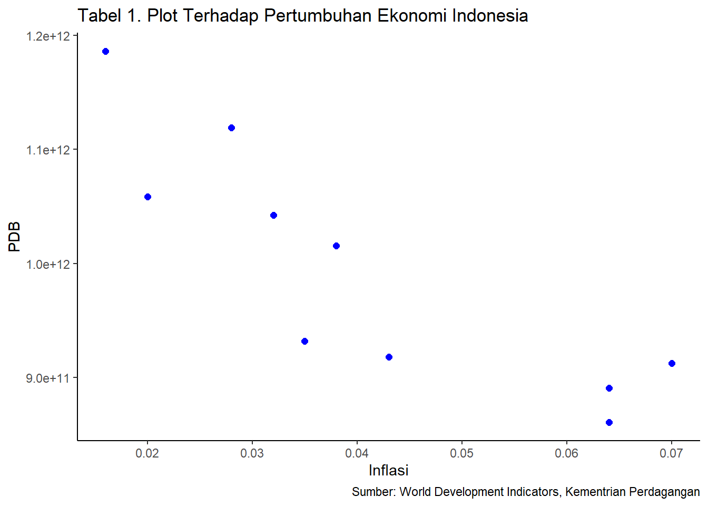

Analisis Pengaruh Inflasi Terhadap PDB Indonesia dalam kurun waktu 10 Tahun (Tahun 2012-2021)
Metode Penelitian Politeknik APP Jakarta
Author
Naia Apriani Rosvania (210203784)
Published
January 20, 2023
.
1 Pendahuluan
1.1 Latar belakang
Dalam tulisan ini topik yang akan dibahas adalah tentang bagaimana inflasi dapat berpengaruh terhadap pertumbuhan ekonomi dalam rentang tahun 2012-2021. Dalam dunia ekonomi, khususnya ekonomi makro salah satu hal yang paling sering dibahas adalah inflasi. Tinggi rendahnya inflasi akan menentukan kebijakan yg diambil oleh bank sentral untuk menjaga kestabilan harga dan daya beli masyarakat, jika inflasi tinggi akan mendorong tingkat suku bunga naik yang menyebabkan lesunya iklim investasi, kemudian pengangguran meningkat diiringi dengan konsumsi masyarakat yang menurun. Turunnya tingkat konsumsi agregat berdampak terhadap pendapatan pemerintah sehingga mempengaruhi laju pertumbuhan ekonomi. Apabila perekonomian suatu negara mengalami suatu kelesuan, maka Bank Indonesia dapat melakukan kebijakan moneter yang ekspansif dengan cara menurunkan tingkat suku bunga.
Inflasi adalah kenaikan harga agregat pada komoditas yang terjadi secara terus menerus yang merupakan implikasi dari adanya perubahan pada tingkat investment, government spending, dan net export. Dalam pandangan ekonomi, inflasi merupakan sebuah fenomena moneter dalam suatu negara. Ketidakstabilan inflasi cenderung mengakibatkan terjadinya gejolak ekonomi. Tujuan utama dari pengendalian inflasi adalah kebijakan makro ekonomi untuk sebagian besar negara di dunia dengan cara pemeliharaan stabilitas harga. Hal ini dilakukan untuk mencapai pertumbuhan ekonomi yang berkelanjutan.
Pertumbuhan ekonomi merupakan salah satu indikator yang digunakan dalam melihat kondisi perekonomian di suatu negara. Umumnya pertumbuhan ekonomi diukur menggunakan produk domestik bruto (PDB). Dimana PDB dihitung berdasarkan jumlah barang dan jasa yang dihasilkan dalam suatu negara selama periode tertentu Hal tersebut sesuai dengan pendapat Samuelson (1998:390) yaitu:
“The gross domestic product (or GDP) is the most comprehensive measure of a nation’s total output of goods and services. It is sum of dollar values of consumption, gross investment, government purcaheses of goods and services, and net exports produced within a anation during a given year.”
Produk Domestik Bruto digunakan untuk berbagai hal khususnya untuk melihat performa perekonomian di suatu negara. Dengan membandingkan nilai PDB dari satu periode dengan periode sebelumnya akan terlihat laju pertumbuhan ekonomi. Peningkatan ataupun penurunan dalam laju pertumbuhan ekonomi tersebut akan digunakan sebagai pertimbangan dalam pengambilan kebijakan yang tepat untuk menjaga stabilitas perekonomian. Penelitian tentang keterkaitan antara inflasi dan pertumbuhan ekonomi ini perlu untuk dilakukan karena kedua variabel tersebut merupakan indikator makroekonomi yang penting dan memiliki peranan besar dalam menentukan kestabilan perekonomian suatu negara. Selain itu, dengan mengetahui hubungan antara kedua hal tersebut maka akan mempermudah untuk menentukan kebijakan yang tepat dalam mencapai kestabilan suatu perekonomian. Inflasi merupakan representatif dari pencapaian tingkat harga yang stabil. Sementara pertumbuhan ekonomi adalah parameter tingkat produktivitas suatu negara. Dengan demikian, hubungan antara inflasi dan pertumbuhan ekonomi merupakan hal penting untuk diteliti. Mengingat pentingnya masalah inflasi dan hubungannya dengan pertumbuhan ekonomi, sebagaimana telah dijelaskan pada latar belakang di atas, maka penulis tertarik untuk mengkaji lebih dalam mengenai arah hubungan antara inflasi dengan pertumbuhan ekonomi di Indonesia dan mempelajari bagaimana bentuk hubungan yang terjadi diantara kedua variabel tersebut.
1.2 Ruang lingkup
Dalam tulisan ini akan diberikan batasan yang akan mencakup tentang bagaimana inflasi bisa mempengaruhi nilai pertumbuhan ekonomi, dan ruang lingkup penelitian ini yang hanya menggunakan data dalam kurun waktu 10 tahun (dari tahun 2012 sampai dengan tahun 2021). kegiatan pengambilan data diperoleh melalui Web Kementerian Dalam Negeri.
1.3 Rumusan masalah
Berdasarkan uraian latar belakang masalah diatas, maka terdapat beberapa indikator yang menjadi rumusan masalah dalam penelitian ini. Adapun rumusan masalah tersebut adalah sebagai berikut:
Apakah inflasi berpengaruh terhadap pertumbuhan ekonomi Indonesia dalam rentang waktu 10 tahun (dari tahun 2012-2021)
1.4 Tujuan dan manfaat penelitian
Berdasarkan latar belakang dan rumusan masalah penelitian ini, adapun yang menjadi tujuan dari penelitian ini adalah:
Tujuan penulisan paper ini adalah untuk memenuhi tugas mata kuliah Metodogi Penelitian sebagai tugas pengganti UAS.
Untuk mengetahui dan menganalisis seberapa besar pengaruh inflasi terhadap pertumbuhan ekonomi Indonesia dalam rentang waktu 10 tahun (dari tahun 2012-2021)
Adapun manfaat yang diperoleh dari penelitian ini adalah:
Bagi peneliti bertambahnya ilmu pengetahuan dan wawasan terkait topik yang dibahas.
Bagi masyarakat memberikan informasi kepada khalayak umum mengenai pengaruh inflasi terhadap pertumbuhan ekonomi Indonesia dalam rentang waktu 10 tahun (dari tahun 2012-2021).
2 Studi pustaka
Pertumbuhan ekonomi (Economic growth)
(Kuznets, 1971) menyatakan Pertumbuhan ekonomi adalah kenaikan kapasitas dalam jangka panjang dari negara yang bersangkutan untuk menyediakan berbagai barang ekonomi bagi penduduknya. Kenaikan kapasitas itu sendiri ditentukan atau dimungkinkan oleh adanya kemajuan atau penyesuaian-penyesuaian teknologi, kelembagaan, dan ideologis terhadap berbagai tuntutan keadaan yang ada. Faktor yang diperhatikan dalam mengukur pertumbuhan ekonomi adalah Produk Domestik Bruto (PDB). Produk Domestik Bruto (PDB) adalah total produksi barang dan jasa yang dihasilkan dalam satu waktu tertentu di satu negara atau wilayah tertentu. Ada 3 cara untuk menganalisis mekanisme (kinerja) ekonomi Nasional berdasarkan PDB, yaitu:
Pendekatan Produksi
Pendekatan Pengeluaran/Pembelanjaan
Pendekatan Pendapatan
Menurut M. Suparko dan Maria R. ada beberapa macam alat yang dapat digunakan untuk mengukur pertumbuhan ekonomi yaitu :
Produk Domestik Bruto PDB adalah jumlah barang dan jasa akhir yang dihasilkan dalam harga pasar. Kelemahan PDB sebagai ukuran pertumbuhan ekonomi adalah sifatnya yang global dan tidak mencerminkan kesejahteraan penduduk.
PDB per Kapita atau Pendapatan Perkapita PDB per kapita merupakan ukuran yang lebih tepat karena telah memperhitungkan jumlah penduduk. Jadi ukuran pendapatn perkapita dapat diketahui dengan membagi PDB dengan jumlah penduduk.
Pendapatan Per jam Kerja Suatu negara dapat dikatakan lebih maju dibandingkan negara lain bila mempunyai tingkat pendapatan atau upah per jam kerja yang lebih tinggi daripada upah per jam kerja di negara lain untuk jenis pekerjaan yang sama
Inflasi (Boediono, 2014) menyatakan Inflasi adalah suatu gejala dimana tingkat harga umum mengalami kenaikan secara terus menerus. Kenaikan harga dari satu dua barang saja tidak dapat disebut inflasi, kecuali bila kenaikan tersebut meluas kepada (atau mengakibatkan kenaikan) sebagian besar dari harga barang-barang lain. Inflasi adalah naiknya harga-harga komoditi secara umum yang disebabkan oleh tidak sinkronnya antara program pengadaan komoditi (produksi, penentuan harga, pencetakan uang, dan sebagainya) dengan tingkat pendapatan yang dimiliki oleh masyarakat
Teori yang Menggambarkan Hubungan antara Inflasi dengan Pertumbuhan Ekonomi
Teori pertumbuhan klasik
Teori klasik meletakkan dasar pertama untuk sejumlah pertumbuhan teori selanjutnya. Model pertumbuhan klasik oleh Adam Smith adalah Y = f (L, K, T). Di mana Y adalah output, L adalah tenaga kerja, K adalah modal dan T adalah tanah. Sehingga output terkait dengan tenaga kerja, modal dan, tanah. Akibatnya, pertumbuhan output didorong oleh pertumbuhan penduduk, investasi, pertumbuhan lahan, dan peningkatan produktivitas secara keseluruhan. Selain itu, ia melihat tabungan sebagai pencipta pertumbuhan investasi dan karenanya ia melihat distribusi pendapatan sebagai salah satu penentu yang paling penting dari cepat atau lambat bangsa akan tumbuh.
The Phillips Curve
Tradeoff antara inflasi dan pengangguran digambarkan sebagai kurva Phillips. Penemuan empiris oleh Phillips menunjukkan hubungan terbalik antara tingkat upah dan pengangguran. Penemuan ini diperkuat oleh fakta bahwa pergerakan dalam upah dapat dijelaskan oleh tingkat dan perubahan pengangguran. Sebuah argumen yang mendukung kurva Phillips adalah ekstensi yang menetapkan hubungan antara harga dan pengangguran. Ini bertumpu pada asumsi bahwa upah dan harga bergerak ke arah yang sama. Kekuatan kurva Phillips adalah adanya hubungan antara inflasi dan pengangguran.
The Monetarist
Teori Kuantitas Uang (QTM) mengemukakan bahwa kuantitas uang adalah penentu utama tingkat harga, atau nilai uang, sehingga setiap perubahan dalam kuantitas uang menghasilkan perubahan persis langsung dan proporsional dalam tingkat harga. The monetaris menekankan bahwa setiap perubahan dalam kuantitas uang hanya mempengaruhi tingkat harga atau sisi moneter ekonomi, dengan sektor riil perekonomian benar-benar terisolasi. Hal ini menunjukkan bahwa perubahan suplai uang tidak mempengaruhi output riil barang dan jasa, tetapi mempengaruhi nilai atau harga di mana mereka dipertukarkan saja.
The Keynesian
The Keynesian menentang pandangan monetaris tentang hubungan antara kuantitas uang dan harga. Menurut keynesian, hubungan antara perubahan kuantitas uang dan harga adalah non proporsional dan tidak langsung, melalui suku bunga. Kekuatan teori Keynesian adalah integrasi dari teori moneter di satu sisi dan teori output dan kesempatan kerja melalui suku bunga di sisi lain. Jadi, ketika kuantitas uang meningkat, tingkat bunga jatuh, yang menyebabkan peningkatan volume investasi dan permintaan agregat, sehingga meningkatkan output dan kesempatan kerja. Keynesian melihat hubungan nyata sektor ekonomi moneter yang menggambarkan keseimbangan dalam barang dan pasar uang.
Menurut keynesian, asalkan ada pengangguran, output dan kesempatan kerja akan berubah dalam proporsi yang sama dengan kuantitas uang, tapi tidak akan ada perubahan harga. Namun, pada kesempatan kerja penuh,, perubahan kuantitas uang akan menyebabkan perubahan proporsional dalam harga. Model Keynesian terdiri dari kurva Agregat Demand (AD) dan Agregat Supply (AS), yang tepat menggambarkan hubungan antara inflasi dengan pertumbuhan. Banyak faktor yang mendorong tingkat inflasi dan tingkat output dalam jangka pendek. Ini termasuk perubahan: harapan; tenaga kerja berlaku; harga faktor produksi lainnya, dan/ atau kebijakan moneter fiskal. Kurva jangka pendek AD dan AS menunjukkan hubungan yang positif antara inflasi dan pertumbuhan ekonomi untuk jangka pendek. Namun, ternyata untuk jangka panjang menunjukkan hubungan yang negatif.
3 Metode penelitian
3.1 Data
Tahun
Inflasi (X)
PDB (Y)
2012
0,043
917869910105,749
2013
0,07
912524136718,018
2014
0,064
890814755233,225
2015
0,064
860854235065,079
2016
0,035
931877364177,742
2017
0,038
1015618742565,81
2018
0,032
1042271531011,99
2019
0,028
1119099868265,25
2020
0,02
1058688935454,78
2021
0,016
1186092991320,04
library(tidyverse)
Warning: package 'tidyverse' was built under R version 4.2.2
Warning: package 'readxl' was built under R version 4.2.2
dat<-read_excel('data naia.xlsx')library(ggplot2)ggplot(data=dat, aes(x=X, y=Y))+geom_point(color='blue', size=2)+labs(title="Tabel 1. Plot Terhadap Pertumbuhan Ekonomi Indonesia",x="Inflasi",y="PDB",caption ="Sumber: World Development Indicators, Kementrian Perdagangan") +theme_classic()

Plot Terhadap Pertumbuhan Ekonomi Indonesia
3.2 Metode analisis
Metode analisis yang digunakan dalam penelitian ini adalah metode kuantitatif dan penjabaran deskriptif. Teknik analisis kuantitatif merupakan analisis yang dilakukan dengan perhitungan angka-angka yang faktor yang mempengaruhi inflasi terhadap pertumbuhan ekonomi negara. Metode deskriptif digunakan untuk membuat gambaran secara sistematis dan faktual mengenai gambaran perkembangan dari setiap variabel inflasi dan pertumbuhan ekonomi selanjutnya pendekatan yang digunakan adalah kuantitatif dengan mengaplikasikan model regresi linier berganda. Secara spesifik model tersebut dapat disajikan sebagai berikut:
Berdasarkan data diatas Berdasarkan tabel di atas, pertumbuhan PDB Indonesia tahun 2010-2021 tumbuh secara fluktuatif. Pada tahun 2010-2011 PDB Indonesia mengalami perkembangan sebesar 18,26% ekonomi pada tahun tersebut perkembang baik, pendapatan masyarakat dapat menopang konsumsi masyarakat dan tumbuh stabil. Pada tahun-tahun berikutnya sampai pada tahun 2015 PDB Indonesia terus mengalami penurunan sampai di tahun terendahnya yaitu 2015 yaitu sebesar -3,36% sejumlah USD 860.854.235.065 salah satu penyebab penurunan ini terjadi karena kebijakan pemerintah. Pada 2 tahun berikutnya tahun 2016-2017 PDB Indonesia mengalami pertumbuhan sebesar 8,99% kenaikan ini disebabkan struktur ekonomi Indonesia secara spasial Tahun 2017. Selanjutnya di tahun 2020 PDB Indonesia mengalami penurunan kembali sebesar -5,40% dan mengalami kenaikan kembali di tahun berikutnya yaitu sebesar 12,3%.
4.2 Analisis Masalah
Hasil pengaruh inflasi terhadap pertumbuhan ekonomi diestimasi menggunakan regresi univariat. Hasilnya ditunjukkan sebagai berikut:
Call:
lm(formula = Y ~ X, data = dat)
Residuals:
Min 1Q Median 3Q Max
-9.086e+10 -3.294e+10 6.212e+09 4.719e+10 7.101e+10
Coefficients:
Estimate Std. Error t value Pr(>|t|)
(Intercept) 1.193e+12 4.564e+10 26.138 4.93e-09 ***
X -4.860e+12 1.019e+12 -4.772 0.00141 **
---
Signif. codes: 0 '***' 0.001 '**' 0.01 '*' 0.05 '.' 0.1 ' ' 1
Residual standard error: 5.819e+10 on 8 degrees of freedom
Multiple R-squared: 0.74, Adjusted R-squared: 0.7075
F-statistic: 22.77 on 1 and 8 DF, p-value: 0.001405
Variabel
Coeficient
Std.Error
t.value
Prob
Intercept
1.193e+12
4.564e+10
26.138
4.93e-09 ***
X
-4.860e+12
1.019e+12
-4.772
0.00141 **
R-Squared
0.74
Adjusted R-Squared
0.7075
F-Statistic
22.77
Prob (F-Statistic)
0.001405
Hasil di atas merupakan hasil estimasi OLS dengan menggunakan model regresi mutivariat. Hasil regresi tersebut digunakan untuk mengetahui hubungan antara variabel dependen dan variabel independen. Variabel dependen yang digunakan adalah tingkat pertumbuhan ekonomi (GDP) sedangkan Variabel independen yang digunakan adalah inflasi. Dari hasil regresi dapat dilihat bahwa jumlah ekspor berpengaruh positif terhadap pertumbuhan ekonomi. Dan jika dilihat hasil regresi dapat dilihat bahwa jumlah impor berpengaruh negatif terhadap pertumbuhan ekonomi.
Jumlah Inflasi meningkat sebesar 1 persen maka akan menurunkan pertumbuhan ekonomi sebesar -4.860e+12. Apabila jumlah inflasi menurun akan meningkatkan pertumbuhan ekonomi sebesar 4.860e+12. artinya Inflasi berpengaruh terhadap Pertumbuhan Ekonomi Indonesia/Produk Domestik Bruto (PDB). Inflasi berpengaruh signifikan terhadap Pertumbuhan Ekonomi Indonesia/Produk Domestik Bruto (PDB), Hal yang menyebabkan meningkatnya inflasi di Indonesia salah satunya dikarenakan pandemi Covid-19 yang melanda Indonesia yang berakibat naiknya harga BBM, harga sembako, menurunnya minat masyarakat membeli, bahkan meningkat drastisnya pengangguran di Indonesia.
5 Kesimpulan
Terdapat hubungan antara pengaruh Inflasi terhadap Pertumbuhan Ekonomi Indonesia Periode 2012-2021. Pertumbuhan Ekonomi Indonesia atas Inflasi memiliki hubungan yang lemah. Inflasi menunjukkan nilai negatif dan berpengaruh secara signifikan terhadap pertumbuhan ekonomi Indonesia. Yang berarti naiknya tingkat inflasi akan menurunkan pertumbuhan ekonomi secara signifikan.
6 Saran
Berdasarkan hasil yang sudah dibahas penulis dapat memberikan saran-saran sebagai berikut:
Pemerintah harus mampu menjaga kestabilan harga barang dan jasa, serta kondisi keamanan dalam negeri yang stabil dan kondusif sehingga tingkat inflasi dapat dikendalikan dengan baik. Pemerintah pada intinya harus mampu menjaga kestabilan harga secara keseluruhan dan dalam menentukan kebijakan mengenai harga dan pendapatan harus disesuaikan dengan kondisi ekonomi yang terjadi pada saat itu sehingga inflasi yang tinggi dapat dihindari, serta pemerintah harus tetap mengupayakan agar tingkat inflasi tetap terkendali di bawah 5%.
Peran pemerintah agar laju inflasi mencapai tingkat yang paling rendah dengan melakukan operasi pasar, menjaga kecukupan pasokan dan ketersediaan barang, mengamankan stok didaerah, menjaga kelancaran distribusi barang dan mengembangkan sistem logistik nasional. Pemerintah diharapkan dapat menurunkan tingkat inflasi, yaitu dengan cara menjaga nilai tukar rupiah agar tidak terdepresiasi, menurunkan jumlah uang beredar, Diharapakan pemerintah mau mengoptimalkan kebijakan penghasilan (income policy) dan kebijakan insentif perpajakan (tax incentive plan).
Sebaiknya kebijakan Bank Indonesia sebagai induknya bank di Indonesia yang mengatur kebijakan tentang suku bunga haruslah sesuai dengan prosedur dan situasinya
7 Referensi
Dharma, B. D., & Djohan, S. (2015). Pengaruh investasi dan inflasi terhadap kesempatan kerja melalui pertumbuhan ekonomi. KINERJA, 12(1).
Nadirin, M. (2017). Hubungan antara Inflasi dan Pertumbuhan Ekonomi di Indonesia periode 1994.1-2013.4. Jurnal Ilmiah Mahasiswa FEB, 5(2), Article 2.
Salim, A., Fadilla, F., & Purnamasari, A. (2021). Pengaruh Inflasi Terhadap Pertumbuhan Ekonomi Indonesia. Ekonomica Sharia: Jurnal Pemikiran Dan Pengembangan Ekonomi Syariah, 7(1), 17–28.
PENGARUH INFLASI TERHADAP PERTUMBUHAN EKONOMI DI INDONESIA | JOURNAL OF MANAGEMENT Small and Medium Entreprises (SME’s). (n.d.). Retrieved 20 January 2023, from https://ejurnal.undana.ac.id/JEM/article/view/3311.